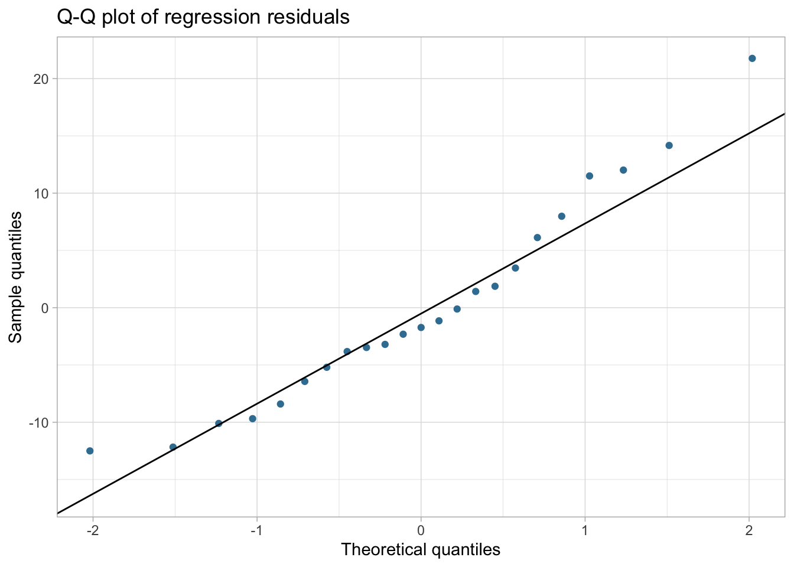
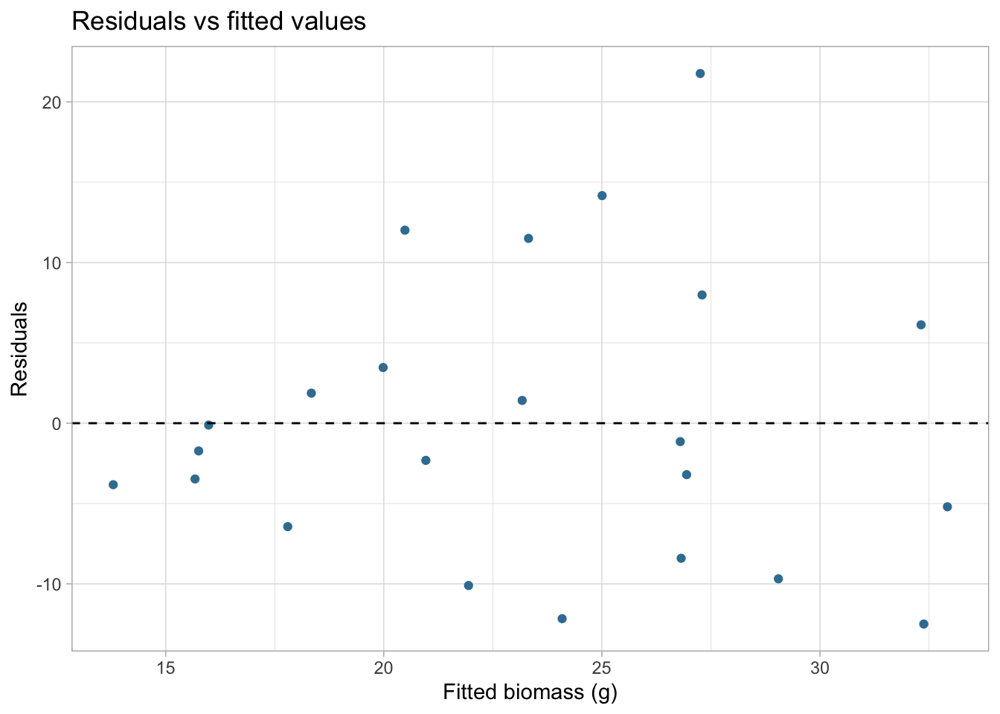
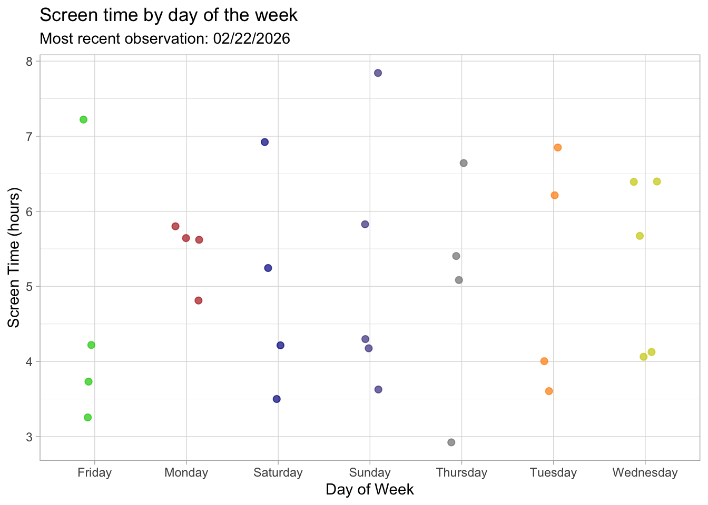
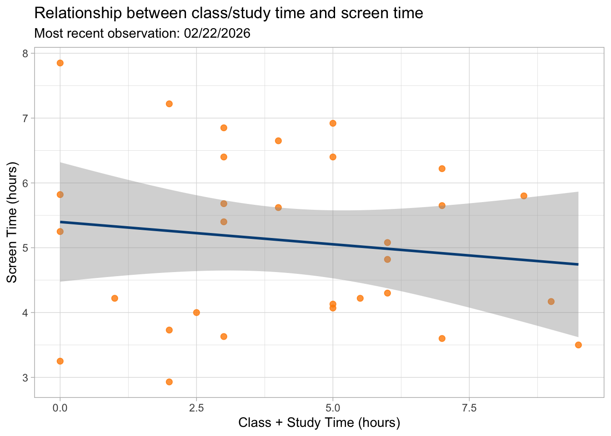

library(tidyverse) #general use
library(here) #file organization
library(janitor) #cleaning data frames
library(readxl) #reading excel files
salinity <- read_csv(
here( #allows you to write in file paths
"data", #folder
"salinity-pickleweed.csv" #salinity data
))
screentime <- read_csv(
here(
"data", #data folder
"screentime.csv" #personal data
))homework-03
Set up tasks
Problem 1: Slough soil salinity
a. An appropriate test
The appropriate tests to determine the strength of the relationship between California pickleweed biomass and soil salinity are Pearson’s r correlation and simple linear regression, since both biomass (measured in grams) and soil salinity (measured as electrical conductivity in mS/cm) are continuous variables. Pearson’s r measures the strength and direction of the linear association between salinity and biomass, and quantifies how closely changes in salinity are related to changes in plant biomass. In contrast, simple linear regression treats biomass as the response variable and salinity as the predictor, estimating how much biomass changes for each one-unit increase in salinity, and using \(R^2\) to quantify how much of the variation in biomass is explained by salinity.
b. Create a visualization
#base layer: ggplot
ggplot(data = salinity,
aes(x = salinity_mS_cm,
y = pickleweed)
) +
#first layer: adding scatter plot points to represent individual pickleweed plants
geom_point(color = "#3b7ea1") +
#second layer: adding a linear regression line to show the trend
geom_smooth(method = "lm", color = "#1b2a41", se = TRUE) +
#labelling the x and y axes
labs(
title = "As soil salinity increases, pickleweed biomass also increases",
x = "Soil salinity (mS/cm)",
y = "California pickleweed biomass (g)"
) +
#changing the theme from the ggplot default
theme_classic()
c. Check your assumptions and run test
Checking assumptions for simple linear regression
Assumption 1: Linearity
Linearity was assessed previously using the scatterplot with a fitted regression line in 1b. That plot shows a roughly straight-line trend, so the linearity assumption has been met.
Assumption 2: Normality of residuals
#fitting linear regression model: biomass predicted by salinity
sal_lm <- lm(pickleweed ~ salinity_mS_cm, data = salinity)
#creating Q-Q plot of residuals
ggplot(data = data.frame(resid = resid(sal_lm)),
aes(sample = resid)) +
geom_qq(color = "#3b7ea1") +
geom_qq_line() +
labs(
title = "Q-Q plot of regression residuals",
x = "Theoretical quantiles",
y = "Sample quantiles"
) +
theme_light()
#Shapiro-Wilk test for normality of residuals
shapiro.test(resid(sal_lm))
Shapiro-Wilk normality test
data: resid(sal_lm)
W = 0.95126, p-value = 0.3107Assumption 3: Homoscedasticity (constant variance)
#plotting residuals vs fitted values to assess constant variance
ggplot(data = data.frame(fitted = fitted(sal_lm),
resid = resid(sal_lm)),
aes(x = fitted, y = resid)) +
geom_point(color = "#3b7ea1") +
geom_hline(yintercept = 0, linetype = "dashed") +
labs(
title = "Residuals vs fitted values",
x = "Fitted biomass (g)",
y = "Residuals"
) +
theme_light()
For the simple linear regression model showing the relationship between soil salinity (mS/cm) and pickleweed biomass (g), I checked the assumptions of linearity (previously assessed in the scatterplot in 1b), normality of residuals, and homoscedasticity. I evaluated normality using a Q–Q plot and a Shapiro–Wilk test of the residuals (p = 0.31), and I assessed constant variance using a residuals vs. fitted values plot. The linearity assumption was met, the Q–Q plot shows points falling approximately along the reference line, the Shapiro–Wilk test is not significant, and the residual plot shows no clear pattern or funnel shape, so the assumptions for simple linear regression appear reasonably met.
Running the test (simple linear regression)
#displaying regression results
summary(sal_lm)
Call:
lm(formula = pickleweed ~ salinity_mS_cm, data = salinity)
Residuals:
Min 1Q Median 3Q Max
-12.499 -5.819 -1.726 4.794 21.765
Coefficients:
Estimate Std. Error t value Pr(>|t|)
(Intercept) 13.0895 4.0350 3.244 0.00389 **
salinity_mS_cm 2.0832 0.7188 2.898 0.00860 **
---
Signif. codes: 0 '***' 0.001 '**' 0.01 '*' 0.05 '.' 0.1 ' ' 1
Residual standard error: 9.144 on 21 degrees of freedom
Multiple R-squared: 0.2857, Adjusted R-squared: 0.2517
F-statistic: 8.398 on 1 and 21 DF, p-value: 0.008605d. Results
To evaluate the strength of the relationship between California pickleweed biomass (g) and soil salinity (mS/cm), I used a simple linear regression because both variables are continuous and I wanted to quantify how biomass changes with increasing salinity. The results show a significant positive relationship, with biomass increasing by about 2.08 g for every 1 mS/cm increase in salinity (linear regression: slope = 2.08, \(R^2\) = 0.29, p = 0.0086). This indicates that higher soil salinity is associated with greater pickleweed biomass, and salinity explains about 29% of the variation in biomass in this study.
e. Test implications
Based on the results, pickleweed biomass tends to increase as soil salinity increases, which suggests that this species might perform better in more saline areas of the site. Since salinity explained about 29% of the variation in biomass, it seems like salinity is an important factor for planting success, although other factors are also likely influencing growth. For restoration planning, this means we may want to prioritize planting pickleweed in areas with higher salinity levels, while still considering other environmental conditions that could affect survival and growth.
f. Double check your own work
#conducting Pearson correlation test between soil salinity (mS/cm) and pickleweed biomass (g)
cor.test(salinity$salinity_mS_cm,
salinity$pickleweed,
method = "pearson")
Pearson's product-moment correlation
data: salinity$salinity_mS_cm and salinity$pickleweed
t = 2.8979, df = 21, p-value = 0.008605
alternative hypothesis: true correlation is not equal to 0
95 percent confidence interval:
0.1568265 0.7757682
sample estimates:
cor
0.5344778 Pearson’s product–moment correlation measures the strength and direction of the linear relationship between soil salinity (mS/cm) and pickleweed biomass (g) using the correlation coefficient r. The results showed a moderate positive correlation (r = 0.53, p = 0.0086), meaning that biomass tends to increase as salinity increases. Since simple linear regression and Pearson’s correlation both test for a linear relationship between two continuous variables, they led to the same overall conclusion that there is a significant positive relationship between soil salinity and pickleweed biomass.
Problem 2: Personal data
Visualization 1: visualizing screen time across days of the week
#finding most recent observation date
most_recent_date <- max(screentime$Date)
ggplot(data = screentime, #starting with my dataframe
aes(x = `Day of Week`, #x-axis: categorical variable
y = `Screen Time (hours)`, #y-axis: response variable
color = `Day of Week`)) + #coloring by day of week
geom_jitter(width = 0.15, #adding horizontal jitter
alpha = 0.7, #making points slightly transparent
size = 2) + #point size
labs(
x = "Day of Week",
y = "Screen Time (hours)", #changing axes labels
title = "Screen time by day of the week", #title summarizing main message,
#subtitle for most recent observation
subtitle = paste("Most recent observation:", most_recent_date)
) +
scale_color_manual( #changing colors from default
values = c("Monday" = "firebrick",
"Tuesday" = "darkorange",
"Wednesday" = "yellow3",
"Friday" = "green3",
"Saturday" = "blue4",
"Sunday" = "slateblue4")
) +
theme_light() + #changing theme from default
theme(legend.position = "none") #removing legend
Visualization 2: Screen time vs. Study time
ggplot(data = screentime,
aes(x = `Class + Study time (hours)`, #x-axis: continuous predictor
y = `Screen Time (hours)`)) + #y-axis: response variable
geom_point(color = "darkorange", #changing color from default
size=2, #point size
alpha=0.8) + #adding transparency
#adding linear trend line to show pattern
geom_smooth(method = "lm",
color = "#014f86",
se = TRUE) +
labs(
x = "Class + Study Time (hours)", #labelling axes
y = "Screen Time (hours)",
#title summarizing main message
title = "Relationship between class/study time and screen time",
#subtitle for most recent observation
subtitle = paste("Most recent observation:", most_recent_date)
) +
theme_light() #using different theme from default